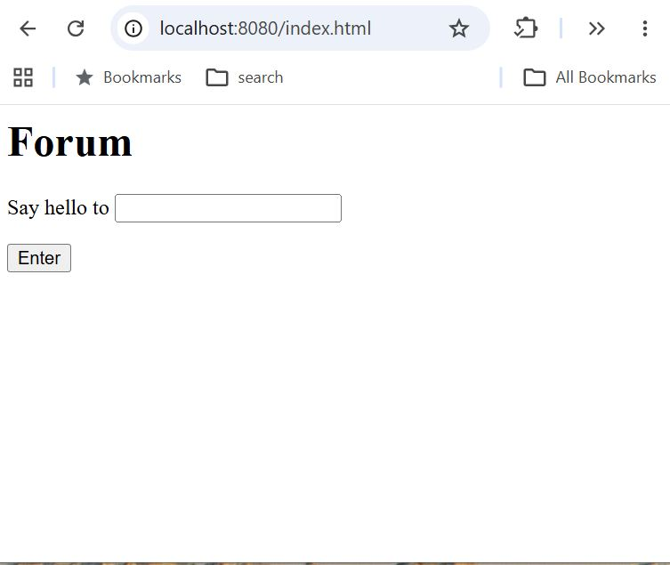

November 14, 2026
A link to the commit: here
This is a web forum application, whose construction is guided by quality, deliberate approach, and openness to inspiration.
View of the application in this first commit:

Some concrete decisions at this stage are being made, as follows.
The project will provide the most capability with the fewest dependencies. This will cause the surface area for bugs to be lowered. Towards that end, it will depend on the Minum web framework, an ultra-minimalist web framework, providing many of the fundamental basic needs like web serving, templating, and data persistence.
A Makefile is used to control the build process for better developer ergonomics. It adds some ease of customization, such as providing helpful descriptions of the major functions, and hints about the output locations of reports.
Maven is selected for its conservative approach to building. It handles the compilation and dependency steps. Version 3.10.0 is selected just for being a recent version and hopefully has the fewest bugs. Maven wrapper is used (mvnw) to avoid the necessity of having Maven installed, and to keep the build tool consistent between developers.
Java 25 is selected for stability, since it is the current long-term support version.
README's, documentation files, and code comments are located throughout the project to provide illumination on intent.
This code was adjusted from the public GitHub repo, minum_usage_example_smaller
Modifications were made to place all output in the "target" directory.
Great care was taken to narrow down the initial commit to the minimum needed. The "pom.xml" file, which provides configuration to Maven, only has exactly what is needed, and appropriate versions of every tool were carefully considered.
There is consideration of edge and negative cases throughout the
system. For example, running the make run target without having
built a jar file will output an error message suggesting next steps.
Likewise, running a make target that does not exist will show help.
This first round follows the approach of building the least viable amount. It is small, yet it does work. Being small, the next steps become clearer, and innovation has a safety net. I do not even really know what I am building yet, but as time goes on its shape will become clear.
At this early stage, I am not going to add steps to deploy this to a cloud environment. Partly because that would incur an expense with little value, and partly because there is simply not enough built to make it worthwhile.
As a final note - AI is prevalent. Many developers are "vibe coding", delegating the coding process to computers. In my opinion, there are innumerable small design decisions that warrant careful human decision making, which precludes use of that approach.
This project embraces craft and longevity. I am not against AI per se, but all code in this project is intended to be understood by humans, which requires a deliberate pace and small increments. I can confirm the code follows my intention by careful testing.